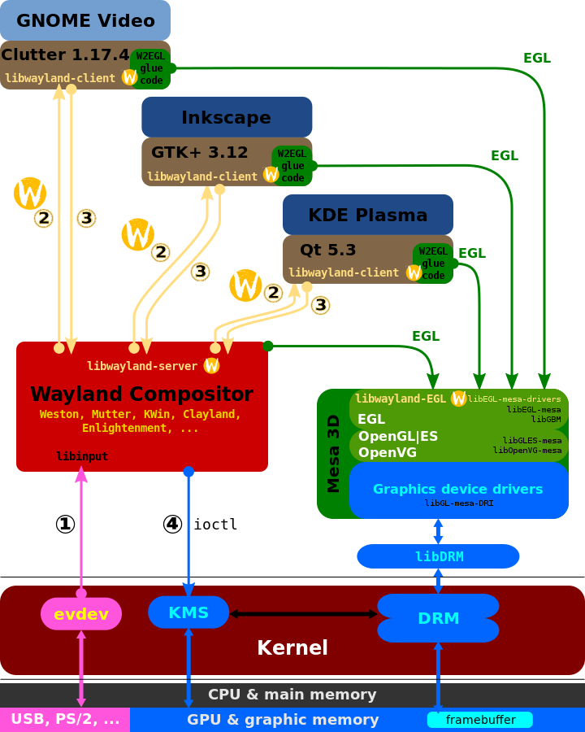

Wayland¶
Wayland与Weston简介¶
Wayland display server protocol¶
① The en:evdev module of the en:Linux kernel gets an event and sends it to the en:Wayland compositor. This is similar to the X case, which is great, since we get to reuse all the input drivers already in the kernel.
② The Wayland compositor looks through its scenegraph to determine which window should receive the event. The scenegraph corresponds to what’s on screen and the Wayland compositor understands the transformations that it may have applied to the elements in the scenegraph. Thus, the Wayland compositor can pick the right window and transform the screen coordinates to window local coordinates, by applying the inverse transformations. The types of transformation that can be applied to a window is only restricted to what the compositor can do, as long as it can compute the inverse transformation for the input events.
③ As in the X case, when the client receives the event, it updates the UI in response. But in the Wayland case, the rendering happens in the client, and the client just sends a request to the compositor to indicate the region that was updated.
④ The en:Wayland compositor collects damage requests from its clients and then re-composites the screen. The compositor can then directly issue an en:ioctl to schedule a pageflip with KMS